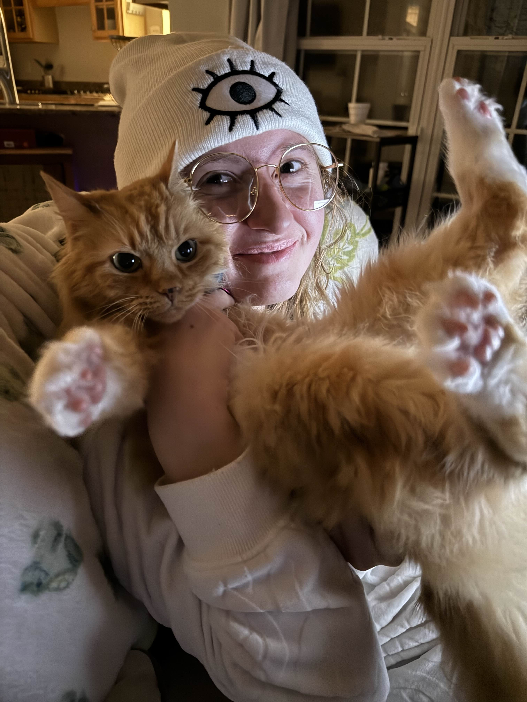
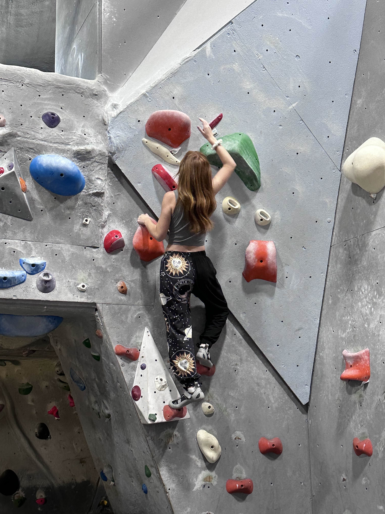
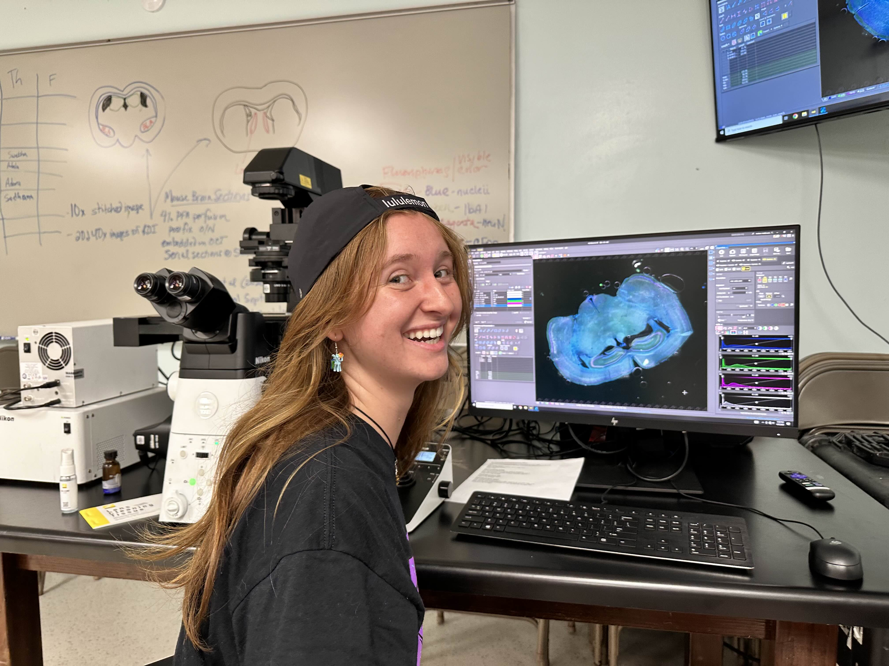

About Me

My name is Ava Piper! I am a graduate student currently pursuing a PhD at the University of Alabama Birmingham (go Blazers!) where I live with my cat Inky. I was born in South-West Florida and attended highschool at Riverdale Highschool in Fort Myers, where I graduated with an International Baccalaureate diploma. For my undergrad, I attended the University of Tampa where I gradauted with a Bacehlor of Science in Psychology with a minor in History.

I love rock climbing, and since attending the University of Alabama Birmingham, I have gotten more into rock climbing, joining the UAB rock climbing club and regularly climbing at the various parks located in the Alabama wilderness surounding Birmingham. My time not spent rock climbing is usually spent with my friends, either in person or online.
Research

My research at the University of Alabama Birmingham involves the study of neurostimulation and its effect on seziure disorders through the use of electrodes surgically implanted into the brains of seizure patients. I am undertaking this research as part of Dr. Adam Goodman's research group.
 At the University of Tampa I conducted research under the oversight of Dr. Benjamin Marsh investigating the other-race effect. Our research involved testing the degree to which University of Tampa students were able to remember faces of different races, specifically as it related to the student's own race.
At the University of Tampa I conducted research under the oversight of Dr. Benjamin Marsh investigating the other-race effect. Our research involved testing the degree to which University of Tampa students were able to remember faces of different races, specifically as it related to the student's own race.
Art
Outisde of my research and schooling, I currently do work for Knwowing Neurons as an illustrator. Below you will see one of the article headlines I drew for them for an article on chemogenetics and brain circuits!

Contact
Email: avvie357@gmail.com
Address: 12345 kitty street